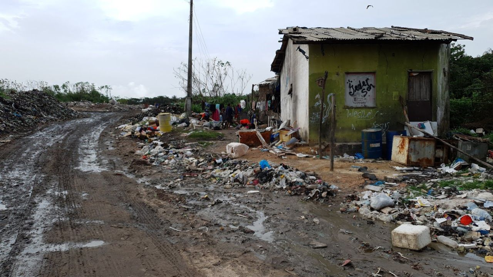

PROBLEMAS CAUSADOS
PELA FALTA DE SUSTENTABILIDADE
LIXO ELETRÔNICO
O descarte inadequado de equipamentos aumenta a quantidade de lixo eletrônico e pode causar contaminação do solo e da água.
CONSUMO DE RECURSOS
A produção constante de equipamentos aumenta a necessidade de matérias-primas, energia e água, contribuindo para o consumo de recursos.
IMPACTOS AMBIENTAIS E SOCIAIS
A falta de sustentabilidade pode contribuir para poluição, degradação ambiental e problemas sociais, como condições inadequadas de trabalho e exclusão digital.
